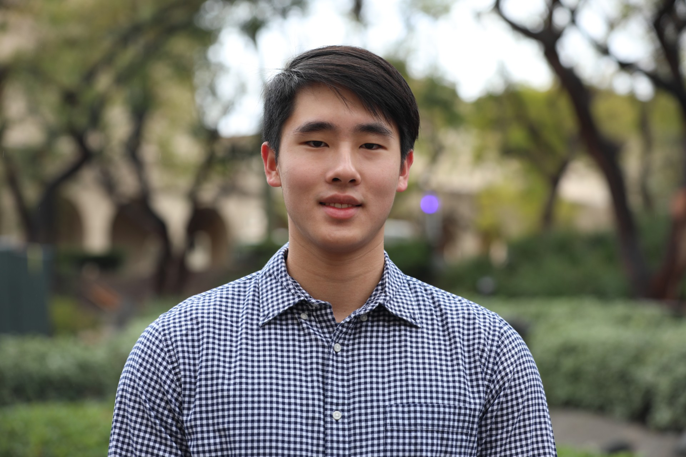

My name is Parthorn Ammawat, and I'm a junior at Caltech studying Electrical Engineering and Applied Physics. I'm interested in integrated photonics, circuit QED, and quantum hardware. My focus is on experimental and engineering challenges in quantum computing, particularly advancing superconducting qubits and scaling quantum systems by developing novel devices for improved connectivity, error reduction, and scalability.
To achieve these goals, I lead an effort at Marandi Lab to design and fabricate on-chip coupled optical parametric oscillators, aiming to realize spectral phase transitions and ultimately develop an on-chip Ising machine. In the Painter Lab, I contribute to a two-node remote entanglement experiment using quantum transducers, focusing on the qubit module, and work on the EM design for the mechanical cat qubits project. For more details, visit my research page.
Feel free to contact me at parthorn.a[at]caltech[dot]edu!